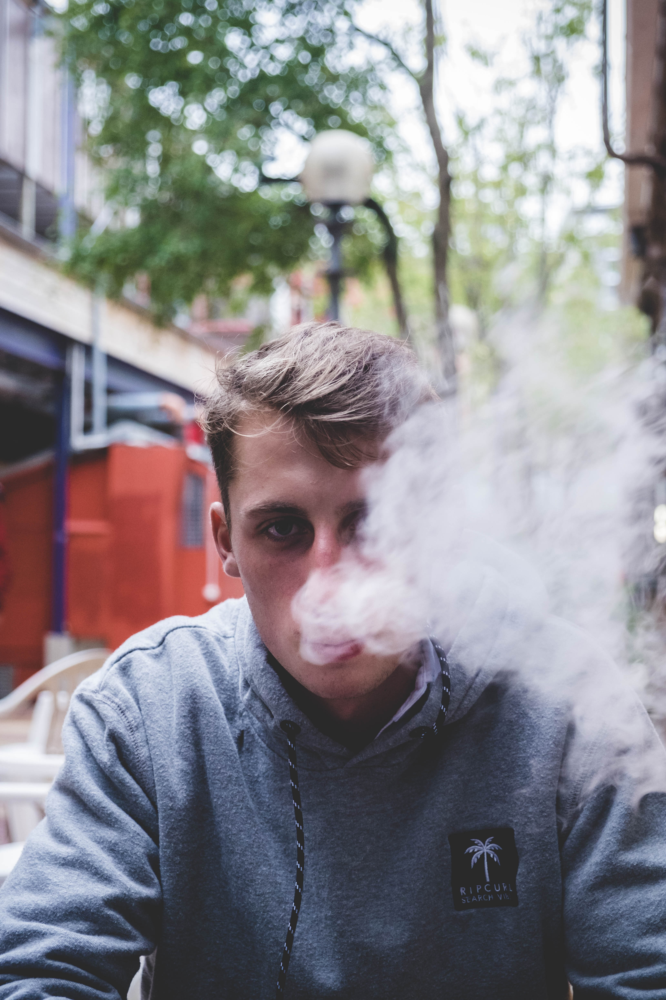

About Me

I was born and raised in a small town in the south island of New Zealand called Blenheim, where the sun is always shining and the grapes never stop growing.
I attended Marlborough boys’ college for my high school education, this was the seed for my art, design and photography passion.
Now, I am a first-year student at Massey University Wellington studying a bachelor of design and majoring in visual communication.
Here is a portfolio of my work that I have created over the past few years.
 Home
About
Work
Contact
Home
About
Work
Contact